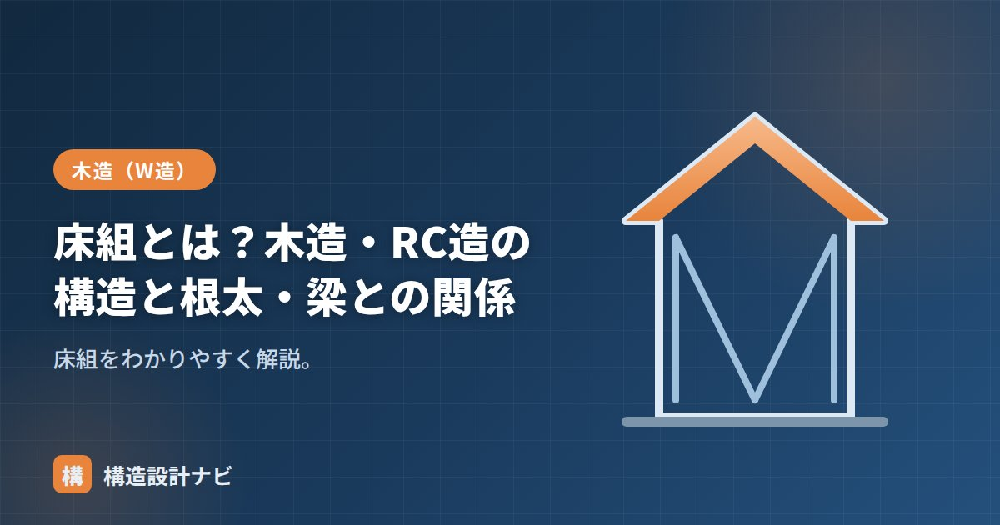

床組とは？木造・RC造の構造と根太・梁との関係

床組（ゆかぐみ）とは、床を支える骨組みのことです。木造とRC造で構成が異なります。床組は、私たちが日常的に足で踏みしめる床の仕上げ材のすぐ下にあって、鉛直荷重（人・家具などの重さ）を基礎や柱・梁へと伝える役割を担うと同時に、地震や風による水平力を耐震要素へ伝達する「水平構面」としての役割も持っています。単に床を支えるだけでなく、建物全体の耐震性能にも関わる重要な部位です。
- 床組は床を支える骨組みで、木造とRC造で構成が大きく異なる
- 木造1階は「床板→根太→大引→床束→基礎」の順で荷重を伝える
- 床組は鉛直荷重を支えるだけでなく、地震力を伝える水平構面としての役割も持つ
木造の床組
1階の床組は、下から順に力を伝えます。
- 根太：床板を直接支える細い材。
- 大引：根太を支える太い横材。
- 床束：大引を下から支える短い束。
1階の床組は、大引を床束で細かく支えることで、たわみを抑える構造になっています。2階以上の床組は床下に束を立てられないため、根太を直接支えるのは床梁となり、床梁は両端の柱で支持されます。階によって荷重の伝わり方が変わる点が、木造の床組を理解するうえでのポイントです。
床組と水平構面の関係
床組は鉛直荷重を支えるだけの部位ではありません。地震時には、床面自体が「水平構面」として働き、各階の耐力壁に地震力を分配する役割を担います。床の面剛性が低いと、地震力がうまく耐力壁に伝わらず、一部の壁に力が集中してしまうことがあります。逆に床の面剛性が高ければ、建物全体で地震力を分担しやすくなり、耐震性能の向上につながります。このため現在の木造住宅では、床組の設計において鉛直荷重の支持性能だけでなく、水平構面としての剛性も重視されています。
根太レス工法（剛床）
近年は、根太を省き厚い構造用合板（24mmなど）を大引・梁に直接張る「根太レス工法（剛床）」が普及しています。床の水平剛性が高まり、地震に有利です。根太を用いる従来工法に比べて部材点数が少なく施工性が良いこと、床鳴りの原因になりやすい根太のたわみが生じにくいことも、剛床が普及した理由として挙げられます。
RC造の床組
RC造では、床そのものが鉄筋コンクリートのスラブ（床版）で、これを梁で支えます。木造のような根太・大引はなく、スラブ＋梁が床組にあたります。スラブは面として一体に打設されるため、木造の根太レス工法と同様に、それ自体が高い水平剛性を持つ水平構面として機能します。RC造では床組の設計が、そのまま建物全体の水平力伝達計画に直結するといえます。
よくある注意点
木造の床組でよくある問題は、床下の湿気による大引・床束の腐朽や、根太の断面不足によるたわみ・床鳴りです。リフォームで間取りを変更する際に、床の水平構面としての性能を損なわないよう、既存の床組の構成を十分に確認してから改修計画を立てる必要があります。
リフォーム現場で気をつけているのは、間取り変更のために床組の一部を撤去する際、水平構面としての連続性が途切れていないかだ。見た目には床が復旧されていても、面剛性が抜けたままだと地震時の力の伝わり方が変わってしまう。
床組の力の流れ（図解）
部材寸法と間隔の目安
| 部材 | 一般的な寸法 | 間隔 | 決まる理由 |
|---|---|---|---|
| 床板（構造用合板） | 厚24〜28mm（根太レス）／12〜15mm（根太あり） | — | 下の材の間隔でたわみが決まる |
| 根太 | 45×45〜45×105mm | @303〜455mm | 床板の厚さとのバランス |
| 大引 | 90×90mm程度 | @900mm程度 | 床束の間隔（3尺グリッド） |
| 床束 | 90×90mm／鋼製束 | @900mm程度 | 大引のたわみと座屈 |
| 根太掛け | 厚24mm以上 | — | 土台際の根太を受ける |
間隔がどれも「303・455・900」と半端に見えますが、これは尺モジュール（1尺＝303mm）に由来します。1間＝1,820mm（6尺）を基準に、その1/2が910mm、1/4が455mm、1/6が303mm。日本の在来木造はこの寸法体系でできているため、合板（910×1,820mm）もぴったり納まるようになっています。
床組でよく起きる不具合
| 症状 | 主な原因 | 対策 |
|---|---|---|
| 歩くとふわふわする | 根太・大引の断面不足、間隔が広すぎる | 根太の追加、大引下に束を増設 |
| 床鳴り（きしみ） | 釘の緩み、木材の乾燥収縮、束の沈下 | ビス増し打ち、鋼製束の再調整 |
| 局所的に沈む | 床束の沈下、束石の不同沈下 | 束の高さ再調整、地盤の確認 |
| 床下がカビ臭い | 換気不足、防湿層の不備 | 基礎パッキン・換気口の確認、防湿シート |
| 大地震で建物がねじれた | 水平構面（床の面としての強さ）不足 | 剛床化、火打ちの追加 |
床組というと「人や家具を支える」という鉛直荷重の役割ばかり意識されますが、耐震上はもう一つ、「地震の水平力を耐力壁に伝える」という役割が決定的に重要です。床が面としてしっかりしていないと、地震力が耐力壁まで届かず、壁がいくら強くても効果が出ません。
この「面としての強さ」を水平構面といい、根太レス工法（厚合板を直接梁に留める）が主流になった最大の理由がここにあります。詳しくは剛床仮定と床面内せん断力で解説しています。
よくある質問
Q1. 根太レス工法と従来の根太工法はどちらが良いのですか？
耐震性の面では根太レス工法（厚さ24〜28mmの構造用合板を梁・大引に直接留める）が有利です。床が一体の面として働き、水平構面の強さが大幅に向上するためです。一方、従来の根太工法は部材が細く運びやすい、部分的な改修がしやすいといった利点があります。新築では根太レスが主流です。
Q2. 床がふわふわするのは構造上問題がありますか？
すぐに倒壊する危険があるわけではありませんが、根太や大引の断面不足、床束の沈下といった原因が隠れていることがあります。とくに部分的に沈む場合は床束や地盤側の問題が疑われるため、床下点検口から束と束石の状態を確認することをおすすめします。
Q3. 床組の部材はなぜ303mmや455mmという半端な間隔なのですか？
尺モジュール（1尺＝約303mm）に由来します。1間＝1,820mm（6尺）を基準として、その1/6が303mm、1/4が455mm、1/2が910mmです。構造用合板が910×1,820mmで流通しているため、この寸法体系だと材料がぴったり納まり、無駄が出ません。
まとめ
- 床組は床を支える骨組み。木造は根太・大引・床束、RC造はスラブ・梁。
- 木造1階は「床板→根太→大引→床束→基礎」で力を伝える。
- 床組は鉛直荷重の支持だけでなく、地震力を伝える水平構面の役割も持つ。
- 根太レス工法（剛床）は水平剛性が高く地震に有利。RC造のスラブも同様の機能を持つ。